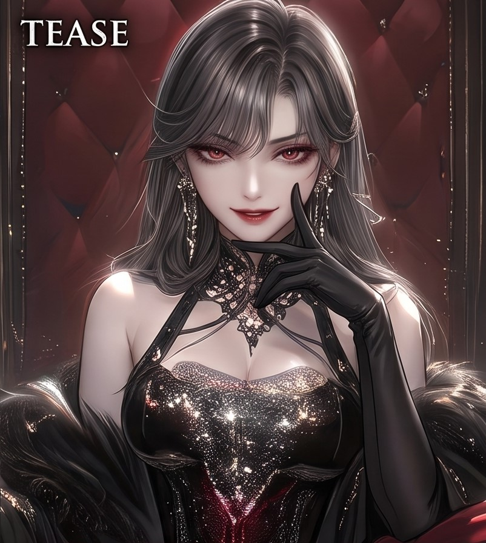

👑 AI 調教終端
🔴 未連線
🔗 連線
🎛️ 手動
⚙️ 設定
💬 對話調教
📷 姿勢考驗 (免打字)
API Endpoint：
API Key（本地端隨意填即可）：
模型名稱：
開啟女王語音朗讀 (TTS，姿勢模式建議開啟)
手動強度 (0-20)：
0
當前模式
待機
強度 (0-20)
0
▲ 收起上方狀態（放大鏡頭畫面）
請點擊右上角「🔗 連線」配對設備，或切換上方「📷 姿勢考驗」開啟前置鏡頭互動。
🥵 快射了
🙏 請求高潮
🔥 加強刺激
發送
獎勵制：擺對姿勢維持 3 秒 → 獎勵抽插 10 秒
▲ 收合提示
準備開始考驗
建議退後約 1.5~2 公尺，讓腰部以上完整入鏡
🙅 雙手在胸前比大叉叉 (X) 維持 1 秒 = 遠距離「快射了」煞車

點擊下方「▶️ 開始 / 換題」讓本女王下達姿勢命令！
▶️ 開始 / 換題
🔄 切換：獎勵制
🥵 快射了
👕 開場先要求脫掉上衣（偵測裸露上半身）
裸露度: --%
🛑 緊急安全停止 (全部歸零)
點擊畫面任意處關閉
沒有允許不准射出來
10
當前強度：4 / 20
🥵 快射了！（向女王回報）
🛑 緊急安全停止